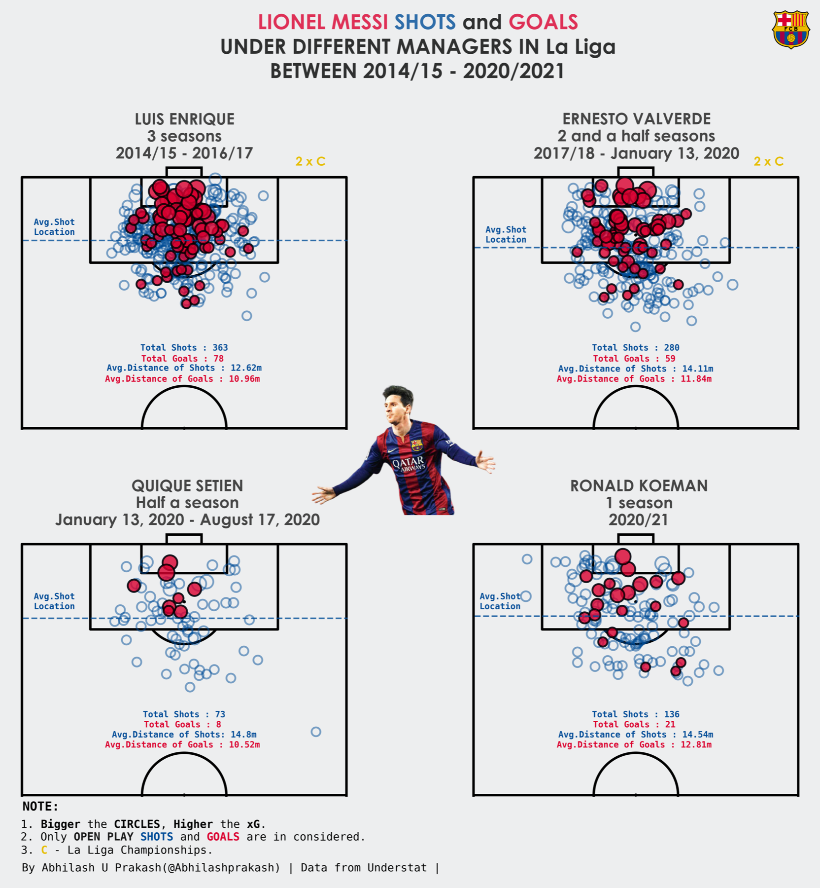

{kind=link}
{kind=link}
Intended message
Messi’s shooting locations, frequency and chance quality varied across Barcelona manager periods. The chart should reveal patterns without implying that a manager caused them.
STATS 401 · VISUALIZATION CRITIQUE + REDESIGN
A Barça story about where shots happen, how often they happen, and what a fair comparison needs.
Loading the audited StatsBomb data…
Start with the visualization we are redesigning.
Abhilash Prakash’s Lionel Messi Shots and Goals Under Different Managers asks whether Messi’s shooting profile changed across eight Barcelona managers. Its repeated pitch maps make a familiar spatial question immediately legible.
 A · EARLIER PERIODS
A · EARLIER PERIODS
B · LATER PERIODSThe original combines shot locations, outcomes and expected-goals values across Messi’s La Liga Barcelona seasons from 2004/05 to 2020/21. A reader is invited to locate common shooting areas, compare periods, and infer changes in volume or quality from the marks.
The redesign keeps the question, then makes the tasks testable.
Messi’s shooting locations, frequency and chance quality varied across Barcelona manager periods. The chart should reveal patterns without implying that a manager caused them.
Football fans and analysts who understand a pitch but may not know how to compare event data, exposure and expected goals fairly.
Locate shooting areas · compare periods · identify concentration · compare frequency · inspect individual attempts.
A critique is useful only when each problem leads to a design response.
A pitch coordinate gives every mark immediate football meaning. Readers can see central, wide and close-range areas without decoding an abstract axis.
Repeated pitch geometry offers a stable frame for manager periods. The visual vocabulary is memorable and the question stays about Messi’s position.
These are not cosmetic issues. Each one changes what a reader can responsibly conclude from the marks.
Problem Hundreds of opaque points stack in the same central zones.
Why it matters A dense region looks busy, but its shape and relative share are hard to compare.
Redesign response Fixed cells reveal share; individual shots remain one click away.
Problem A longer tenure naturally produces more events.
Why it matters Raw counts mix opportunity with shooting behaviour.
Redesign response Rates divide by Messi’s audited regulation minutes on pitch.
Problem Readers must hold one map in memory while scanning another.
Why it matters Comparison becomes a visual search task rather than an analytical one.
Redesign response One linked timeline controls aligned A/B half-pitches.
Problem The original combines providers and expected-goals definitions.
Why it matters A visual difference may be a data difference, not a football difference.
Redesign response One pinned StatsBomb snapshot makes the data contract explicit.
Click a period to replace B. Click B again to swap the highlighted eras.
Click a timeline period to replace B.
How did Messi’s shooting space change between the selected manager periods?
Shared density scale across both periods.
Non-penalty shots per 90 regulation minutes on the pitch.
Every visual change answers a critique above.
Problem Overlap hides concentration.
Change An 8 × 8 common-scale grid is the default; individual attempts remain available.
Result Compare spatial shape first, then recover the event detail when needed.
Problem Tenure length changes raw totals.
Change Shots and NPxG are normalised by Messi’s regulation minutes on pitch.
Result The chart asks about observed behaviour per 90, not time exposed.
Problem Two images force memory-based scanning.
Change A single chronological rail controls both pitches and the metric plot.
Result One click changes the comparison while the visual frame stays stable.
A stronger visual also states its trade-offs.
Density sacrifices exact event positions until a viewer switches modes. Manager periods still differ in age, role, teammates, opponents and sample size; 39 manager fields are inferred only from otherwise single-manager seasons. These are descriptive comparisons, not evidence that a manager caused a change.
Barcelona La Liga, 2004/05–2020/21. The default excludes penalties; direct free kicks remain filterable.
Playing time is the union of lineup intervals, capped at 90 regulation minutes per match. Stoppage-time shots remain in the numerator.
StatsBomb coordinates are shared across periods. Differences coincide with manager windows; they are not causal claims.
Data audit loading…
Shot and lineup events: StatsBomb Open Data (pinned snapshot). Release and scope. Original visualization: Abhilash Prakash. Reproducible processing script · audit record.
Data provided by StatsBomb for public, non-commercial analysis. Attribution and media pack.